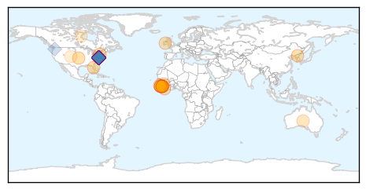

Ebola
30-Day Web Trend
0 alerts, 0 warnings

30-Day Twitter Trend
29 alerts, 0 warnings

Article Locations
Article Confidences

Top Articles:
- 1.000
- Last known Ebola patient in West Africa recovers
- 1.000
- Guinea Was Declared Ebola Free
- 1.000
- Guinea, Last Nation With Ebola, May Soon Be Declared Free of Virus
- 1.000
- Guinea's last Ebola patient released
- 0.999
- Last known Ebola case in Guinea recovers
- 0.999
- Last known Ebola case in Guinea recovers: MSF
- 0.999
- Sierra Leone Declared Ebola-Free
- 0.997
- Sierra Leone declared Ebola free - Sierra Leone
- 0.997
- Ebola Virus Found in 'Former' Patient's Eye
- 0.996
- Ebola patient in Dallas turns critical, no new US cases
- 0.993
- Changes in Screening and Monitoring of Travelers Returning from Sierra Leone
- 0.959
- Building Defenses Against Future Ebola Outbreaks
- 0.956
- the recovery starts now « Awoko Newspaper
- 0.935
- Sierra Leone declared free of Ebola
- 0.916
- Ultra-modern MCH Aide Training School for Waterloo
- 0.908
- Mia Beers: Helping in West Africa to stop the spread of a deadly disease
- 0.763
- Britain ends military support for Ebola fight in West Africa
- 0.726
- Head of Civil Service, Dr. Ernest Surur, Calls for Accurate Human Resource Data Base for effective planning and service delivery.
- 0.594
- UNICEF supports the construction of a school to train maternal and child health aides in Freetown
- 0.535
- Public Health Ignored as HIV Spreads
Top Tweets:
- 0.983
- Ebola virus pose no threat in West Africa - https://t.co/f5BpktgdxG ebola
- 0.973
- Optofluidic Systems Detect Ebola Flu Viruses - https://t.co/uRUYi9CFjj ebola
- 0.962
- Guinea says has no Ebola cases after last patient recovers - Reuters https://t.co/8LnIdLxcxG ebola EVD
- 0.959
- Guinea says has no Ebola cases after last patient recovers - https://t.co/pK3KwiDMjy ebola
- 0.959
- Guinea says has no Ebola cases after last patient recovers - https://t.co/lQx5uTfYW2 ebola
- 0.949
- Ebola outbreak may be nearing end in Guinea - https://t.co/Af7QVTSDOB ebola
- 0.948
- No Ebola Cases In Guinea After Last Patient Recovers - https://t.co/bNhYfbd70u ebola
- 0.945
- According To Guinea No Ebola Cases After Last Patient Recovers - https://t.co/8ZnjpqSxek ebola
- 0.937
- Guinea's last known ebola patient recovers and leaves hospital - https://t.co/vhN6LmM3mr ebola
- 0.934
- Guinea says last known Ebola patient recovers leaves hospital - https://t.co/t8h6cB1BYG ebola
- 0.934
- Guinea says last known Ebola patient recovers leaves hospital - https://t.co/ps3s9JtPTl ebola
- 0.934
- Guinea says last known Ebola patient recovers leaves hospital - https://t.co/bg21ij2kah ebola
- 0.933
- Guinea's Last Ebola Patient Recovers From Hospital - https://t.co/hro8oD4NFY ebola
- 0.931
- Sierra Leone is now Ebola-free - https://t.co/QyahroNfoN ebola
- 0.923
- Guinea reports last known Ebola patient recovers - https://t.co/I0D3btMTGH ebola
- 0.923
- Guinea reports last known Ebola patient recovers - https://t.co/6vVGKJiZnE ebola
- 0.910
- Guinea's last known Ebola patient released - https://t.co/qNqYhCOnWc ebola
- 0.910
- Guinea's last known Ebola patient released - https://t.co/jRq6rxuCPd ebola
- 0.906
- Guinea's last Ebola patient released from care - https://t.co/2ldYzCyq0X ebola
- 0.903
- Guinea's last Ebola patient released - https://t.co/xxQUC2shXs ebola
- 0.900
- Covering the Ebola Epidemic: A Look Back - https://t.co/saslavBteV ebola
- 0.899
- Ebola nurse Rebecca Stretch thanks the people of Carnforth for their good wishes in Sierra Leone - https://t.co/Rk0LyUxDnd ebola
- 0.896
- Guinea's Last Known Ebola Patient Discharged From Treatment Center - TIME https://t.co/qVRqk94O4c ebola EVD
- 0.894
- Guinea says last-known Ebola patient released from hospital - https://t.co/rpKIWxObii ebola
- 0.885
- Guinea's Last Known Ebola Patient Discharged From Treatment Center - https://t.co/O0ey1FkOyE ebola
- 0.884
- Guineas Last Ebola Patient Released - https://t.co/4ircRAxxNg ebola
- 0.884
- Guinea says last known Ebola patient cured remains under surveillance - https://t.co/oXxEKYhoZH ebola
- 0.881
- Last known Ebola case in Guinea recovers: MSF - https://t.co/RN5C4D5WC2 ebola
- 0.881
- Last known Ebola case in Guinea recovers: MSF - https://t.co/IRQGRXiHRe ebola
- 0.868
- ebola - https://t.co/yLNO0XhLyT ebola
- 0.868
- ebola - https://t.co/9xV38SyFFi ebola
- 0.868
- Sierra Leone declared Ebola free - https://t.co/xwn5GTSzW5 ebola
- 0.868
- Sierra Leone declared Ebola free - https://t.co/8tpPluAVdT ebola
- 0.868
- Sierra Leone Declared Ebola-Free - https://t.co/68xMIPReDr ebola
- 0.868
- Ebola: our Infection Prevention & Control Manager talks about his time in Sierra Leone - https://t.co/cbxnox4C4P ebola
- 0.868
- Ebola decontamination webinar - https://t.co/iUdvPkIPd3 ebola
- 0.862
- A soccer club for Ebola survivors is fighting stigmas in Sierra Leone - https://t.co/e9NjpIvJ7Q ebola
- 0.859
- Xenex Germ-Zapping Robot™ Destroys Ebola Virus & Anthrax Spores in New Study ... - Business Wire (... https://t.co/g2opsrApo0 ebola EVD
- 0.855
- Xenex Germ-Zapping Robot™ Destroys Ebola Virus & Anthrax Spores in New Study Performed at ... - https://t.co/qRbiwRKCTI ebola
- 0.854
- Guinea: Last Known Ebola Patient Has Recovered and Is Released - https://t.co/FCCWuCfXLc ebola
- 0.842
- Ebola Lives on After Recovery - https://t.co/1GEPDC37EC ebola
- 0.838
- Guinea Last Nation With Ebola May Soon Be Declared Free of Virus - https://t.co/9DbmJIA2tD ebola
- 0.834
- OFFICIAL CORRECTION-Guinea says last known Ebola patient cured remains under surveillance - https://t.co/P5YtLW1DUI ebola
- 0.834
- OFFICIAL CORRECTION-Guinea says last known Ebola patient cured remains under surveillance - https://t.co/Gu3zXoO3lm ebola
- 0.832
- Guinea's last Ebola patient recovers in Conakry - BBC News https://t.co/iRmmQRPrVz ebola EVD
- 0.829
- Guinea's last Ebola patient released from care in Conakry - https://t.co/yfm8UBVnoY ebola
- 0.816
- First Read: Fear and Political Freak Out From Ebola to Paris - https://t.co/5V73ElC5Jv ebola
- 0.813
- Guinea Last Nation With Ebola May Soon Be Declared Free of Virus - New York Times https://t.co/ilusJl7z2Q ebola EVD
- 0.808
- Sierra Leone is Ebola-free: Like a breath of air - https://t.co/AVeLdxfXbf ebola
- 0.805
- Noxious' Ebola Church TGT - https://t.co/LfPc0zUnaA ebola
Showing top 50 tweets...